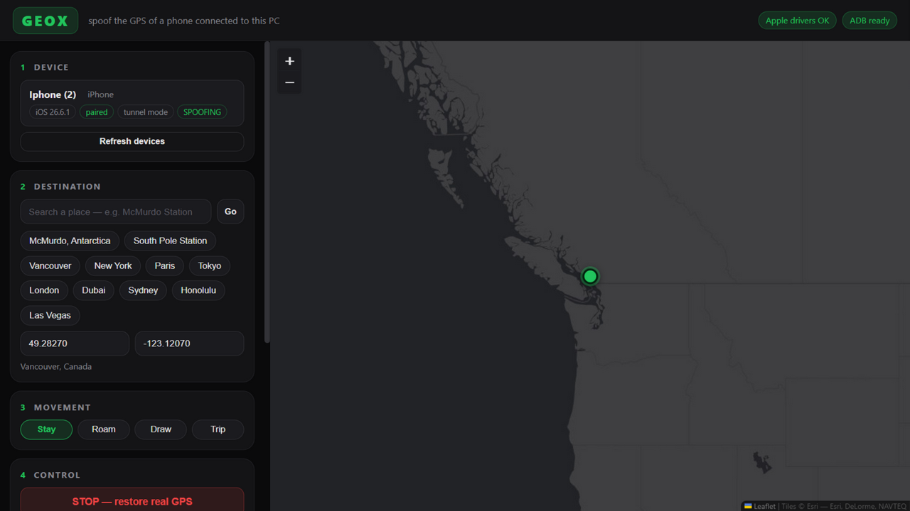

Geox changes the GPS location of an iPhone or Android while it is plugged into your PC. Find My, Snap Map, Google Maps, WhatsApp live location: they all see wherever you point it. You sit in Vancouver; the world sees you in Antarctica.

Everything the paid spoofing tools do, without the subscription.
The phone itself reports the fake coordinates. Not a VPN trick: the operating system location service is what lies, so Find My, Snap Map and every other app see the same fake fix.
Change destination mid-spoof with zero downtime. The next location warms up before the current one retires: the real GPS never shows for even a second.
Follow actual streets to a destination at actual road speeds: fast on highways, slow in city streets. Paste a Google Maps link or search any place.
Drift around a radius at walking speed so your pin looks alive, or draw a custom route on the map and travel it at any speed.
One batch file. No Python, no admin rights, no setup: the first run downloads everything automatically. Zip the folder and share it.
The fake fix is re-asserted every second, tunnel blips auto-reconnect, and a phone that drops off USB is waited for and resumed.
No jailbreak, nothing installed on the phone. It uses the platforms' own mechanisms.
Geox opens Apple's own Instruments location-simulation channel over USB: the exact mechanism Xcode uses. On iOS 17+ it runs through an encrypted developer tunnel that Geox establishes for you. The OS then reports the simulated fix as if it were real GPS, which is why Find My and Snap Map show the fake place.
Android has an official mock-location provider API. Geox installs a tiny companion app, grants it the capability over ADB, and broadcasts fresh coordinates to it every two seconds. The bridge feeds them into the OS as GPS fixes.
From download to spoofing in about two minutes.
git clone instead of downloading the zip also avoids it completely.
run_geox.bat. The browser opens the app automatically.Apple's USB drivers (the Apple Devices app; Geox starts the service itself), tapping Trust, and Developer Mode ON. Geox reveals the switch and walks you through it. Nothing is installed on the phone.
USB debugging enabled, plus a one-time build of the Geox Bridge companion app from the repo. After that, Geox installs and configures it on any connected phone by itself.
What Geox can and cannot do.
Your IP address still shows your real region unless you also use a VPN at the spoofed location. History-based features remember jumps, so use Trip or Roam for believable movement.
The simulation is a live USB session. Lock the phone, put it in your pocket: it keeps working. Unplug the cable and the real GPS returns.
Geox changes the location of your own device. Faking attendance, cheating delivery or ride apps, or deceiving people whose safety depends on your location can be fraud or a terms-of-service violation. You are responsible for how you use it.